🏘️ Matoran — The Villagers of Mata Nui 🏘️
The Matoran are the villagers and workers of Mata Nui, the backbone of society. They lack elemental powers but possess incredible skills in crafting, building, and farming. Each Matoran is connected to one of the six elements and lives in a village led by a Turaga elder. Without masks, Matoran cannot function properly — dizziness, weakness, and eventually a coma-like state will occur. The most famous Matoran, Takua, would later become the Toa of Light, Takanuva.
🏔️ The Six Villages of Mata Nui
Each of the six elements has a corresponding village on the island of Mata Nui, led by a Turaga elder. The villages are spread across diverse landscapes, from volcanic craters to frozen peaks. Click any village to filter characters from that village!
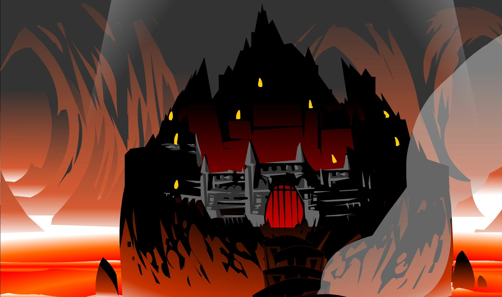
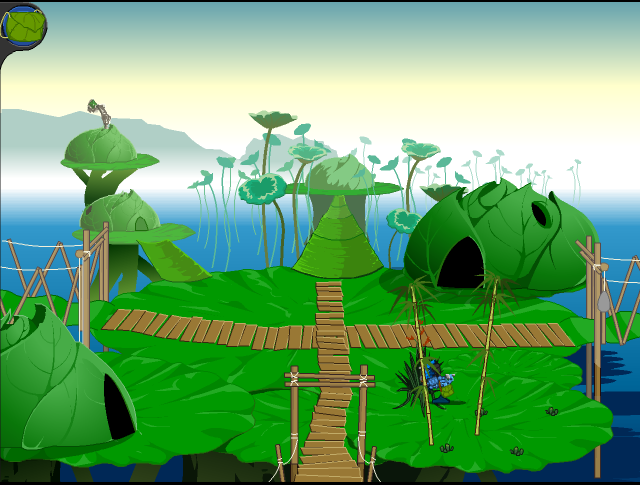
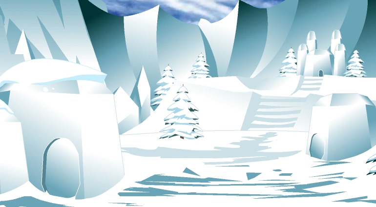
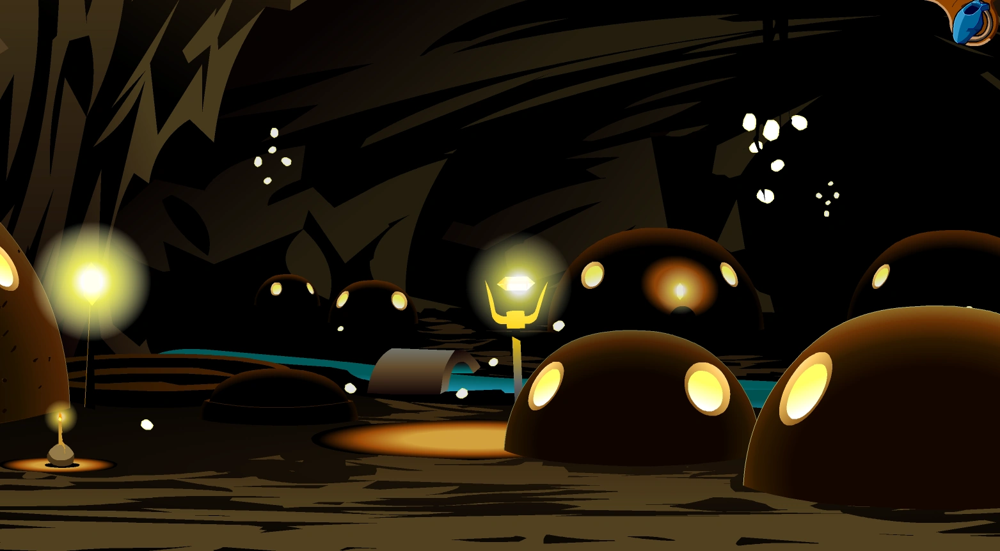
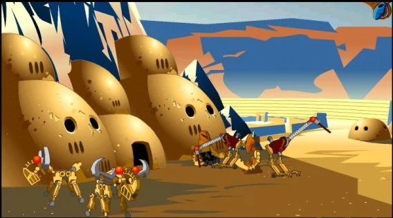
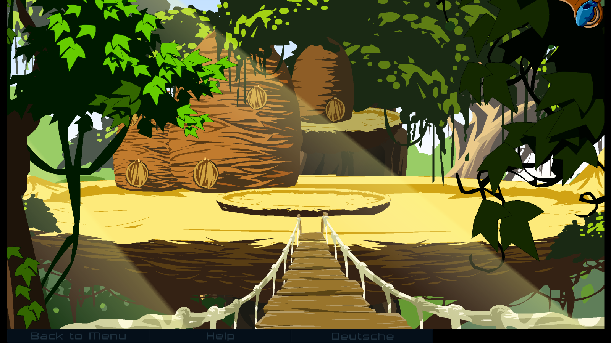
🌟 Notable Matoran
While most Matoran live quiet lives as workers and craftsmen, some have risen to fame through their deeds, inventions, or destiny. These are the most notable Matoran of Mata Nui.
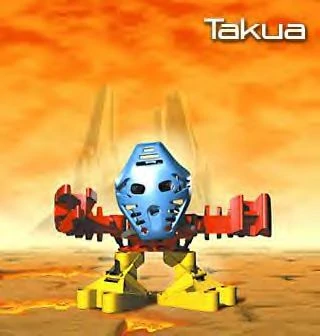
Takua
🔥 Ta-Koro (Wandering)Personality: Adventurous, curious, and restless. Takua never fit in with any single village, preferring to wander Mata Nui recording its history. His destiny was far greater than he knew — he would become Takanuva, the Toa of Light.
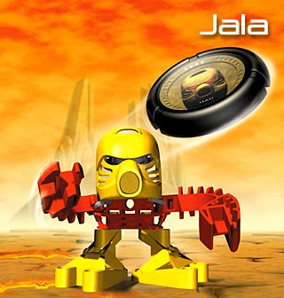
Jaller
🔥 Ta-KoroPersonality: Brave, loyal, and duty-bound. Jaller leads the Ta-Koro Guard with honor. He is Takua's closest friend and would follow him anywhere — even into the lair of Makuta.
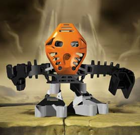
Nuparu
⛰️ Onu-KoroPersonality: Brilliant, inventive, and resourceful. Nuparu created the Boxor to fight the Bohrok and later designed the Vahki. His mind works faster than any other Matoran's hands.
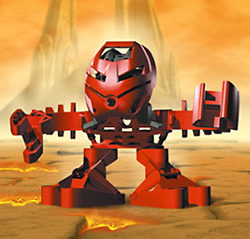
Kapura
🔥 Ta-KoroPersonality: Strange, patient, and mysterious. Kapura has a unique ability to be anywhere he wants to be. He achieved this by training to move extremely slowly, learning that speed is not about moving fast.
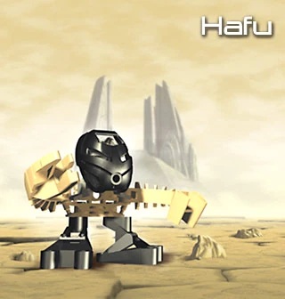
Hafu
🪨 Po-KoroPersonality: Prideful, talented, and confident. Hafu is the greatest carver in Po-Koro, though he never misses a chance to say so himself. His statues are renowned across Mata Nui.
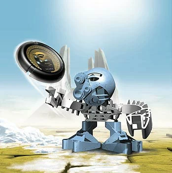
Matoro
❄️ Ko-KoroPersonality: Quiet, thoughtful, and reserved. Matoro assists Turaga Nuju by translating his cryptic speeches. He has a destiny far beyond Mata Nui that would unfold in the years to come.
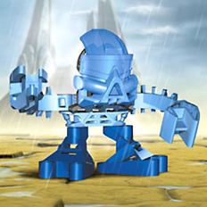
Hahli
💧 Ga-KoroPersonality: Determined, athletic, and loyal. Hahli is a champion Kolhii player who rose to fame during the Kolhii Tournament. She is Jaller's close friend and a skilled fighter.
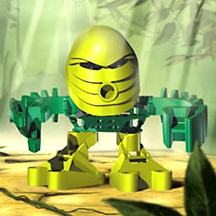
Tamaru
🌪️ Le-KoroPersonality: Shy, kind, and gentle. Despite living in the treetop village of Le-Koro, Tamaru is ironically afraid of heights. He overcomes his fear to serve the Gukko Force and protect his home.
👑 The Turaga — Wise Elders
The Turaga are the wise elders who lead each village. They were once Toa Metru from the city of Metru Nui, but sacrificed their Toa power to awaken the Matoran and lead them to the island of Mata Nui. Each Turaga wears a Noble Kanohi and carries the wisdom of ages.
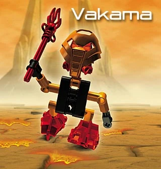
Vakama
🔥 Ta-KoroFormer Role: Toa Metru of Fire
Personality: Wise, patient, and visionary. Vakama leads Ta-Koro with a steady hand. He carries the weight of his past as a Toa Metru and guides his village through countless dangers.
Nokama
💧 Ga-KoroFormer Role: Toa Metru of Water
Personality: Gentle, wise, and diplomatic. Nokama is the heart of Ga-Koro, known for her patience and ability to resolve conflicts. She can translate any language.
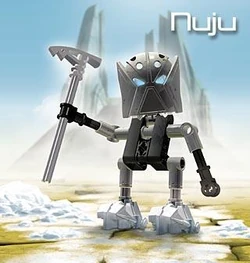
Nuju
❄️ Ko-KoroFormer Role: Toa Metru of Ice
Personality: Mysterious, distant, and contemplative. Nuju rarely speaks directly, preferring to communicate through his translator, Matoro. He spends hours studying the stars.
Whenua
⛰️ Onu-KoroFormer Role: Toa Metru of Earth
Personality: Practical, knowledgeable, and grounded. Whenua is a historian at heart, always seeking to uncover the lost secrets of the Matoran past.
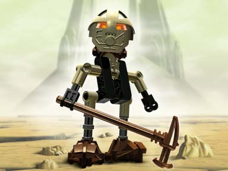
Onewa
🪨 Po-KoroFormer Role: Toa Metru of Stone
Personality: Grumpy, blunt, but deeply caring. Onewa may complain constantly, but he loves his village and will fight to protect every single Po-Matoran.
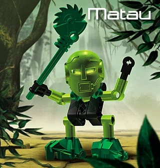
Matau
🌪️ Le-KoroFormer Role: Toa Metru of Air
Personality: Energetic, dramatic, and proud. Matau speaks in grand gestures and colorful language. He leads Le-Koro with flair and encourages music and joy among his villagers.